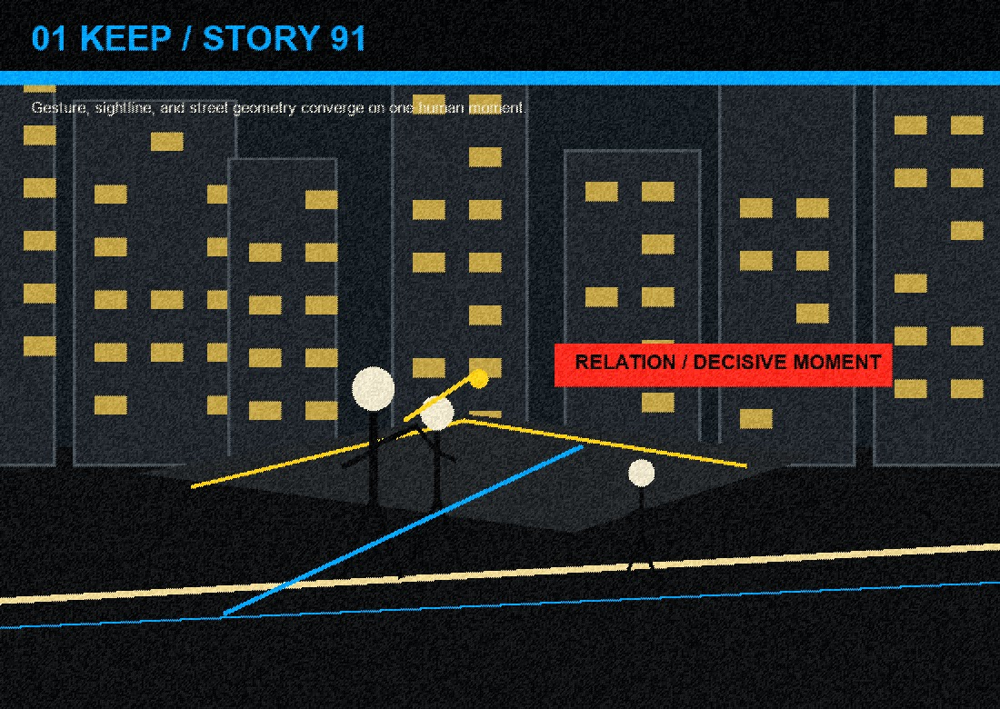
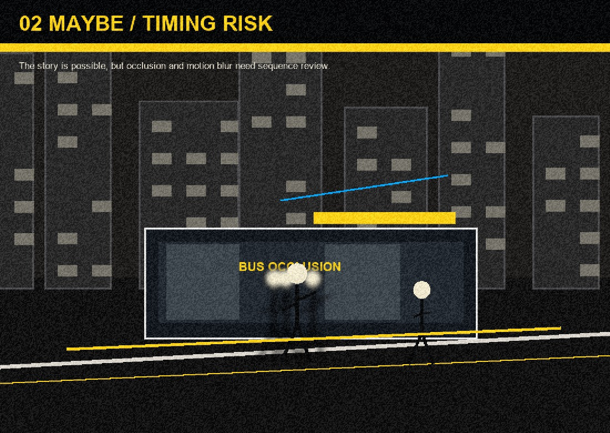
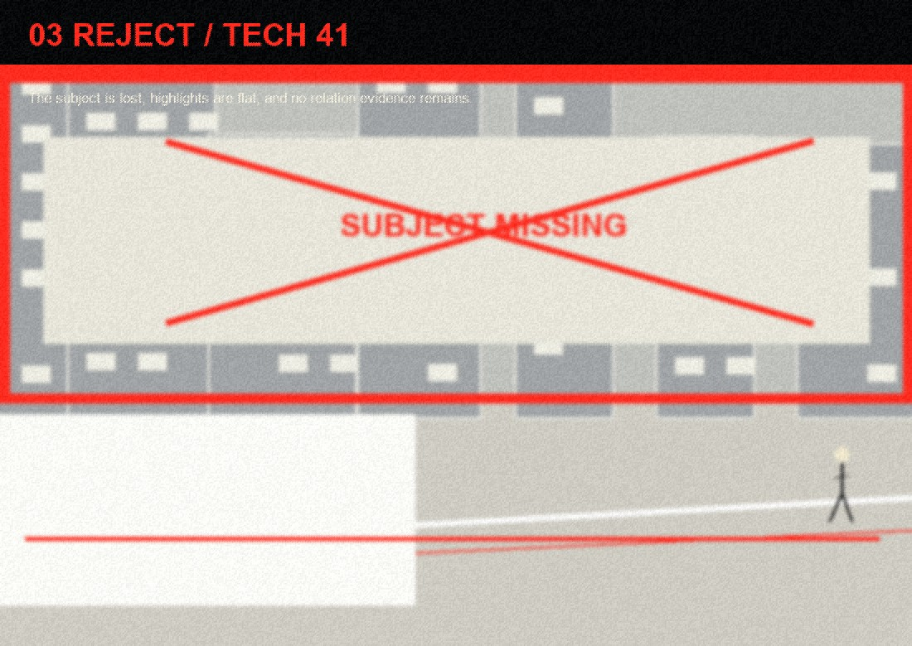

导入
选择 RAW / JPG / PNG 目录，原片留在本机。
LOCAL-FIRST PHOTO CURATION
故事优先的本地 AI 选片工作台：把街头瞬间、人文关系、画面张力和可修潜力放在技术完美之前。



FOUR MOVES
选择 RAW / JPG / PNG 目录，原片留在本机。
本地快速读取结构、亮度、可恢复空间与序列关系。
只把高价值压缩预览交给 Qwen，节省时间和 API 成本。
输出裁切、局部蒙版、HSL、色彩分级和质感参数。
STORY BEFORE SHARPNESS
LumaSift 把人、关系、动作、环境证据、决定性瞬间和后期可塑性放在中心；传统清晰度、曝光和噪点更像便宜过滤器与恢复信号。
技术风险可见，但不自动压过街头摄影价值。